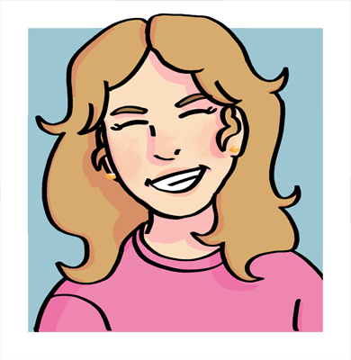

Characters
The residents of The House. Some have been here longer than they can remember.
Journal
One of the oldest residents, with a special connection to The House. Meets you with a smile and a wave.
Mirror
Has lived here longer than almost anyone. Found in the kitchen, cooking for others, listening more than she speaks.
Long Play
Speaks through music. Understood, at last, by Cassette.
Charlie
The newest resident — and she does not plan to stay. Soft until she isn't.
-⁵⁄₂₈
A quiet, gentle presence who watches from a distance. Listen closely if he speaks.
Dream
A quiet fixture of the Dream Garden, made of memories that no longer have anywhere else to go.
Indigo
Chaotic, silent, and impossible to predict. Watch your step.
Cassette
Warm, chaotic, and devoted. Understands her girlfriend without a single spoken word between them.
Green D.A.I.S.Y.
Head librarian of the Library of All Pages. Commanding, thorough, and always busy.
Blue Marble
Soft-spoken and gentle, though she keeps mostly to herself these days.
VA neededAbstract Painting
Theatrical, dramatic, and utterly convinced she's the main character.
Cool S & Clickbaity
Two halves of the same chaotic whole. Never seen apart.
Geeky
The House's resident thrill-seeker. Surprisingly kind once you get past the bravado.
VA neededPBC
New, loud, and thoroughly disliked. Acts like he owns the place.
VA neededDumptruck
New to the House, endlessly upbeat, and always covered in someone else's garbage.
VA needed
Human · she/herLiz
Charlie's owner, waiting on the other side for her to come home.